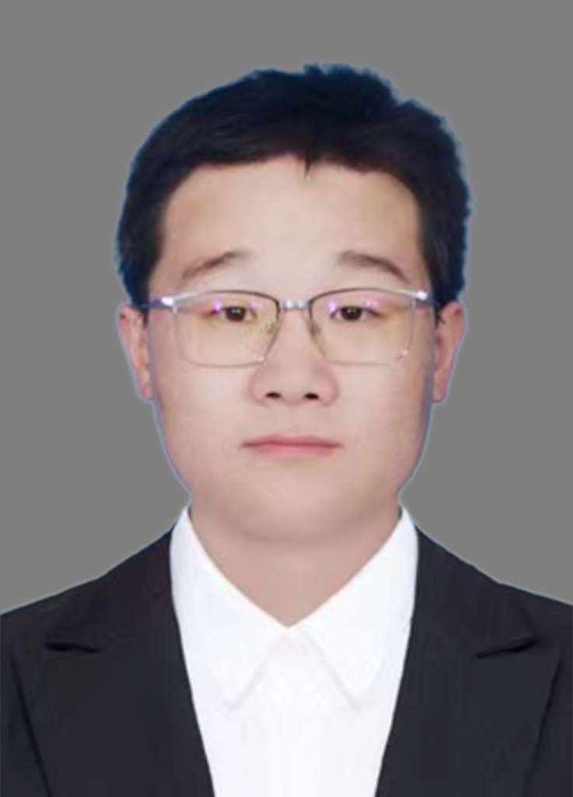

Keyong Sun
Principal Investigator · PhD supervisor
Suzhou Institute of Systems Medicine
Chinese Academy of Medical Sciences
PhD and postdoctoral research, Tsinghua University.
Joined the institute in August 2025.
SUN LAB / THE PEOPLE BEHIND THE SCIENCE
PRINCIPAL INVESTIGATOR

Principal Investigator · PhD supervisor
Suzhou Institute of Systems Medicine
Chinese Academy of Medical Sciences
PhD and postdoctoral research, Tsinghua University.
Joined the institute in August 2025.